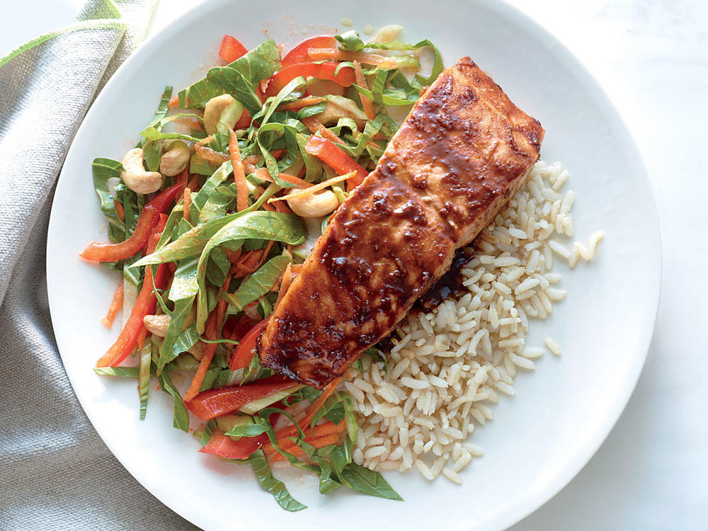

Productivity
How to build a habit
Author:Jan Mackovic
Date:20.January
2 minute read

You create a habit by doing the same thing over and over again for 21 days and it will be normal habit for you to do after 90 days.
Now how do you successfully build habit..
Well that is really simple just do that habit every day let me give you example
You want to go to the Gym 4 times a week and lets say you would go every other Day, at start it is better to go everyday for at least 21 days so you build a habit of going to the gym and you would not quit so easy.
How to change your life in 6 months
Author:Jan Mackovic
Date:18.January
3 minute read
You could change your life in 6 months if you do the following:
Wake up early(4–5 am)
You can do so much in the morning when everybody sleep and sun rises and you start your day right.
Do something in the morning that will make your day successful
So the most important thing in the day that you want to do,do it early in the morning for me that is Coding.
Exercises
Seriously you need to get your body in shape so start doing this,you can do anything from Running,yoga, going to the gym,workout at home,also try to do this in the morning also because later you will be lazy to do this (: .
Schedule your day
No more procrastination,schedule your day write somewhere what you need to do that day,I suggest you to write it on paper 6 most important thing you need to do in the day and place them in order what is the most importing thing out of this 6 to do and do that first and do not move to something else till you are not done with this and after you are done go to second most important thing and repeat the process.If you do this there would be far less wasted time..
Set your goals
So imagine yourself 6 months from now what do you want to accomplish write it down but be realistic because for example i want to loss 50 pounds it is not realistic and it is not healthy also :D,you need to start with small goals to keep your motivation up and also try to make goals for a month so good goal would be i like to loss 2 pound in a month.
Imagine yourself achieving your goal and believe that you will achieve them and with hard work your goals will most likely become reality!
Self
7 Worst habits that you need to avoid
Author:Jan Mackovic
Date:16.January
3 minute read
Some habits are really bad for you and you should stay away from them and today i gonna list 7 worst habits you could get in to:
- 1.Do not take drugs-Trust me it will hurt your body and you could die young,and you could get addicted easily so stay away from it..
- 2.Do not smoke- This also can hurt your body,My grandfather and his brother died from cancer at age of 60 only,but there is more disease that smoking does..
- 3.Playing games all day-Playing games is fine if you play them to relax a bit but that will be maximum for 2 hours,but all day that is just bad you could do so much more important things..
- 4.Snoozing your alarm - Well that is just bad just wake up and do what you have to and if you plan your day and snooze alarm it will fuck up your day even more..
- 5.Drinking to much - You cold drink once in a while(but try not to..),drinking to much is bad,you will not remember most of the things that happen that night and you will regret you action,and also many disease happen from drinking alcohol…
- 6.Fear - Many people have fear of doing something,but do not overthink it just do it count from 5 to 0 and do it before you count 0 and this might help you if you have fear of doing something..
- 7.Social Media - do not be on social media all day it is bad for you check them once a day only for 10 minutes max. and do what is more important.
How to improve focus
Author:Jan Mackovic
Date:16.January
3 minute read
This tip is unusual
Put headphones on your ears but not normal headphones for phone I want you to put gaming headphones or any headphones where u can blast music in your ears and you should not here anything only music(make sure you do not go extreme on volume)
Take for example my headphones..
Now you need to put your favorite songs(Make sure you do not focus on singing the song haha) on and you can focus on what you like to do it best work when I do homework but i also use this for Coding and solving Rubik cube..
Sport
Most underrated player in the Nba
Author:Jan Mackovic
Date:10.January
4 minute read
Klay Thompson
He is the most underrated player that I ever seen…
I do not understand how is he not more famous he got a game with 60 points in 29 minutes i repeat in 29 minutes and Kobe 81 points were in danger but if he played 40 minutes he would score over 81 points,If you watched that game you would know how hot was Klay then he could not miss a shot almost..
Also he got one game where he scored 37 points in a quarter which is amazing and it is a record also..
In 2017–2018 season he has the best season so far and lets look at his stats:
21 points,48,3% fg, 45,3 % 3p, 88,5 % ft,
For shooter this is amazing stats and also he plays with Kevin Durant and Stephen Curry and both of them could be Mvp this season…
Top 3 reasons why people quit Bodybuilding
Author:Jan Mackovic
Date:10.January
4 minute read
You have already seen that somebody said I will go to the gym and get big but in 3 months they quit,maybe that happen to you,but I will show you top 3 reasons why people quit bodybuilding:
- Because they think they will get big results in few months

They think they will look like Arnold Schwaneger in just few months so then they loss motivation and they will most likely quit..
- They are too lazy to go to Gym

So you will not get results if you do not exercises and most of them after few month start procrastinating(or even sooner) and stop going to the gym and quit after some time
- They have a poor nutrition
They want results fast but eat junk food and think they will get big but that does not go that way you need to read a lot about healthy nutrition and then eat like a beast and get results also i suggest this app to track what you eat Myfitnesspal
Most popular post today:
How to change your life in 6 monthsHow to improve focus
Most underrated player in the Nba